Everything the Philippine team needs: clocking in, using your OT, your schedule, telling the WhatsApp group and your payslips. It takes about ten seconds a day.
iPhone: tap Share → Add to Home Screen. Android: tap ⋮ → Add to Home screen.
Everyone is shown as a card with their photo, status and today's hours. Tap your own name.
At the top: the BHL logo or Staff brings you back to this screen. Admin is for admins and finance only. Help opens this guide.
TipThe big green clock is UK time, which your schedule uses. The small grey clock is Manila time, for reference.
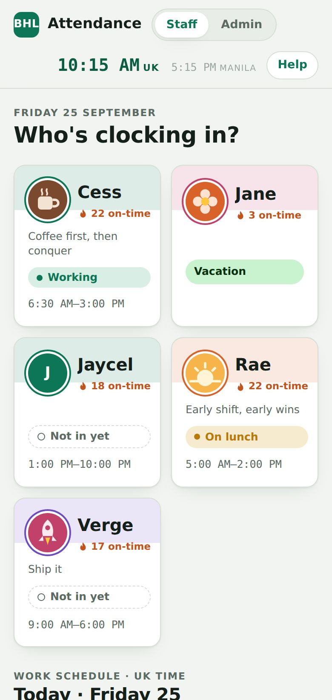
The home screen: tap your name
02Create your PIN (first time only)
Your 4-digit PIN stops anyone else clocking in as you. You make it yourself the first time you tap your name.
Tap your name. The first time, it asks you to Create a 4-digit PIN.
Type 4 digits, then type them again to confirm.
From then on, tap your name and enter your PIN each time.
Heads upAfter 5 wrong PINs your name locks for 15 minutes. Forgot it? Ask an admin to reset it, then make a new one.
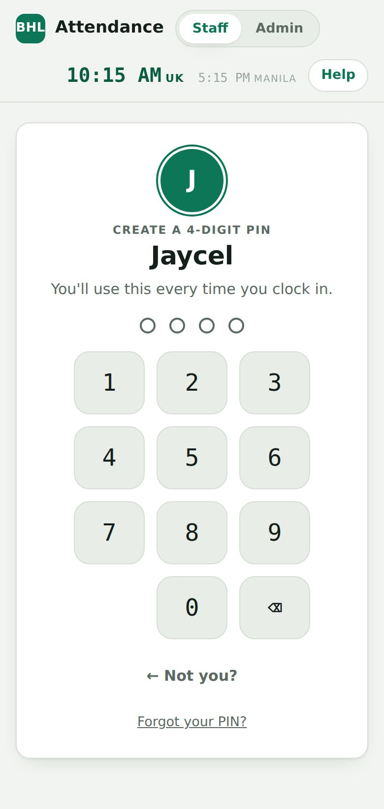
First time: create
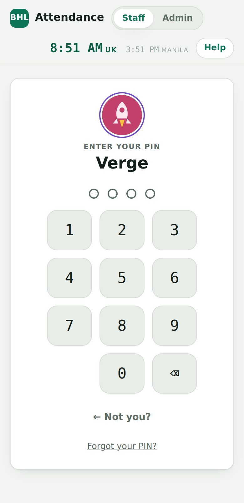
Every day after: enter
03Clock in (and use yesterday's OT)
One tap. The app uses its own clock, not your phone's, so the time is always right.
Check Today's schedule. It's your shift in UK time, from the weekly schedule.
Have OT from your last work day? A green box shows it, e.g. "You have 1:30 OT from Thu, 24 Sept." Pick Start later or Leave earlier to use it today, or No. Your times and a note are filled in for you.
Working shifted hours for another reason? Open Different hours today? and set the start and end. Add a Note if needed.
Tap Clock in. You'll see the time, your XP and your streak.
Good to knowIf you picked No, your OT still covers you if you end up leaving a little early today. It expires at the end of today.
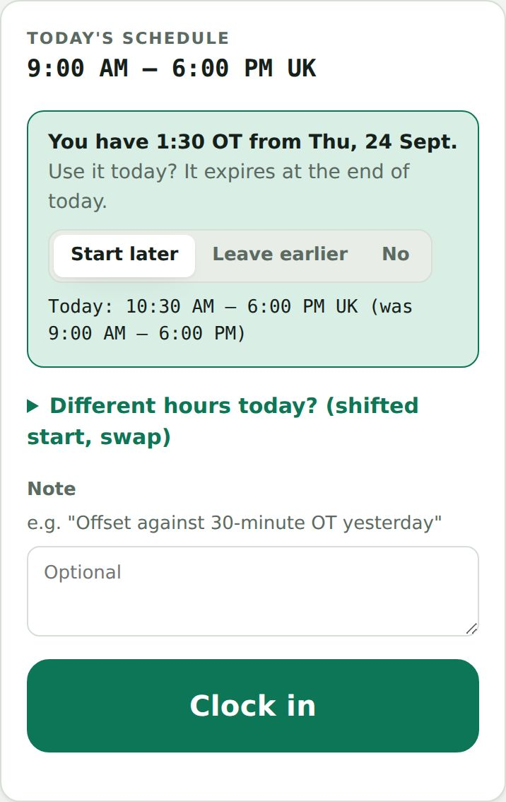
Use yesterday's OT
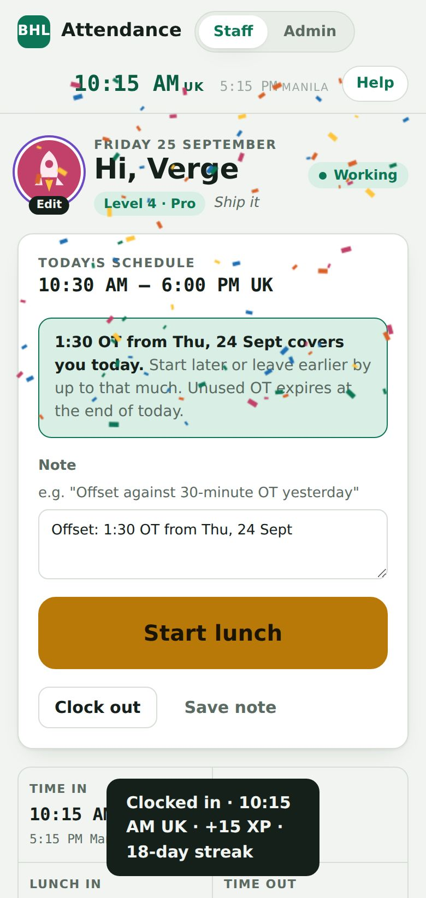
Clocked in
04Start and end lunch
The big button always shows your next step. After clocking in, it turns amber for lunch.
When you go on break, tap Start lunch. When you're back, tap End lunch.
Only the lunch you tap is taken off your hours. No lunch today? Just don't tap it.
Please tap itIf you take a break but forget to tap, it counts as work time and the admin sees "No lunch logged".
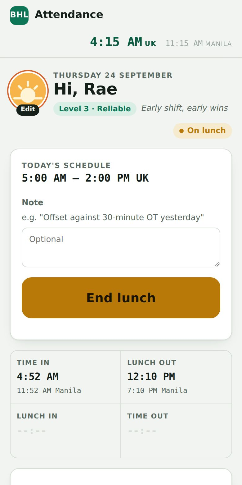
On lunch: the button says End lunch
05Clock out
Tap Clock out at the end of your shift. Leaving before your end time? The app asks you to tap again so you don't do it by mistake.
End your lunch first (the app reminds you).
Tap Clock out. Before your scheduled end, tap a second time to confirm.
Your day fills in: time in, lunch out, lunch in and time out, in UK and Manila time.
Forgot to clock out?Tell an admin with the right time. They can fix it, and every change is recorded.
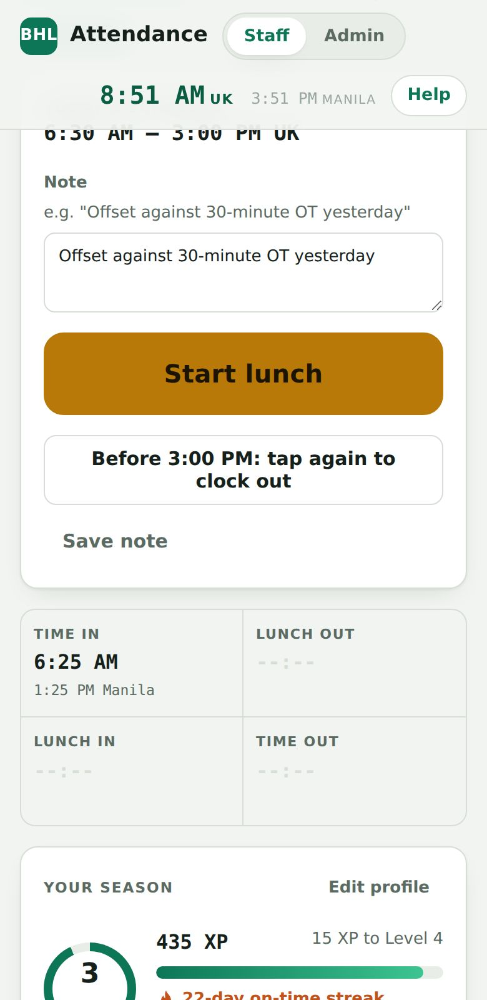
Leaving early: tap again
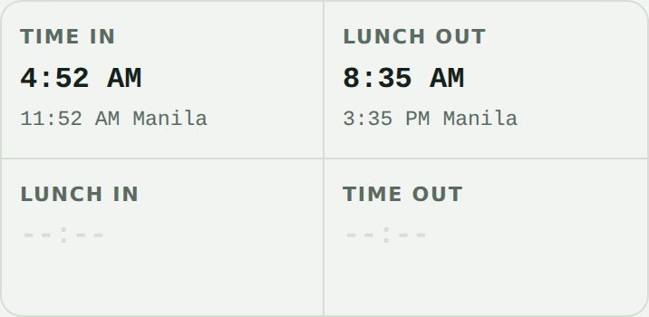
Your day at a glance
06Tell the WhatsApp group
Only at the start and end of your shift. No message is needed for lunch.
After you clock in (and again after you clock out), the green button Copy & Send to WhatsApp Group lights up.
Tap it. Your message is copied in the usual format: Date / Name / Sched / Time In / Time out.
Open the BHL Attendance group in WhatsApp, paste and press Send.
Simple rules: you're paid for the time you actually work, and extra time can be used the next work day.
Worked = time out − time in − the lunch you tapped.
Expected = your schedule for that day minus its planned lunch (e.g. 9:00–6:00 with 1-hour lunch = 8:00; a 4-hour part-time day with no lunch = 4:00).
OT counts in 30-minute blocks: 30 min extra = 0:30, 45 min = 0:30, 1:20 = 1:00, 1:30 = 1:30.
Use OT on your next work day only (start later or leave earlier). Rest days, leave and holidays are skipped, so Friday's OT works on Monday.
Unused OT expires at the end of that day. It isn't paid and doesn't carry over.
Short: time you're under your expected hours that your OT can't cover. It counts as undertime on your payslip.
Late only shows if your day ends up short. Worked your full hours? No late mark.
OT to use todayThe This month card shows how much OT you can still use today.
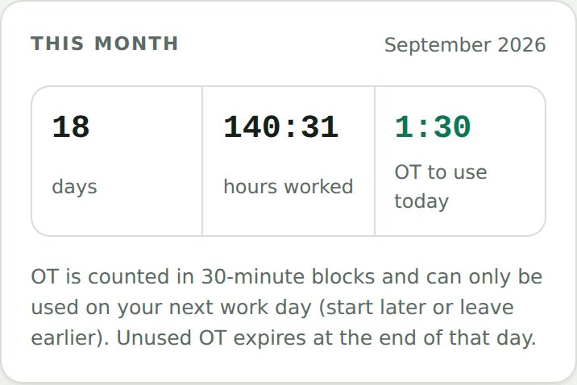
This month
08The team schedule on the home screen
Below the name cards is the team's schedule in UK time. It opens on Today.
Today shows just today's shifts, with a Status column: Working, On lunch, Clocked out, Not in yet, Late · not in, Absent, Rest day, Vacation, Sick, Emergency leave or a holiday.
This week shows Sunday to Saturday. Yellow = rest day, green = vacation, orange = emergency leave, blue = holiday (with its name).
Table or Timeline: the timeline shows each person as one coloured bar, like a calendar.
Use ← / → to move a day (or a week). Tap Today or This week again to jump back to now.
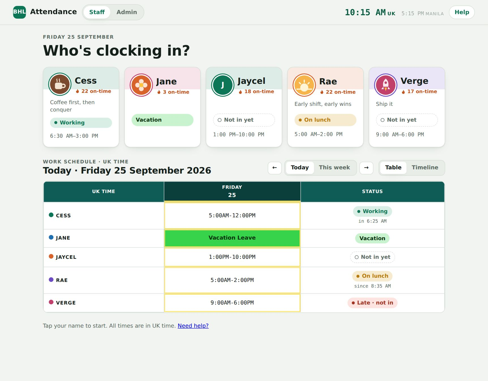
Today, with live status
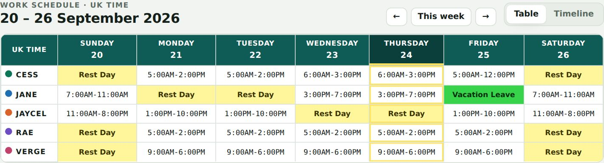
This week (table)
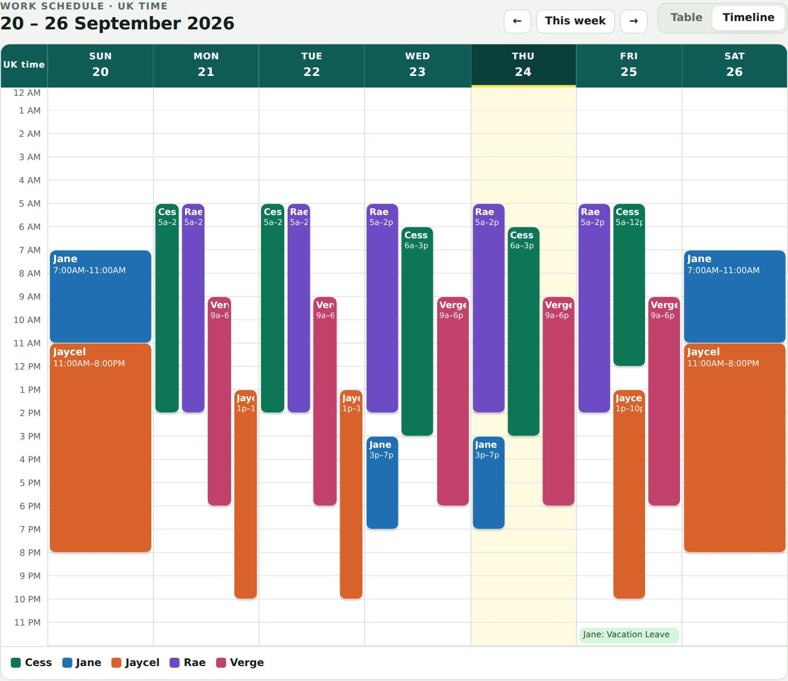
This week (timeline)
09My schedule and asking for changes
After your PIN, My schedule shows this week and the next 2 weeks. You can ask to change your own days.
Pick This week, Next week or the week after. Today is highlighted.
Tap Request a change. For each upcoming day choose Working (with times), Rest Day, Vacation, Sick, Emergency Leave or Unpaid Leave.
Add a short note for the admin and tap Send for approval.
Your changes show in orange with Waiting for admin approval. You can edit or withdraw until an admin decides.
After a decisionApproved: the schedule updates for everyone. Not approved: you'll see the admin's message. Changes an admin makes show here straight away.
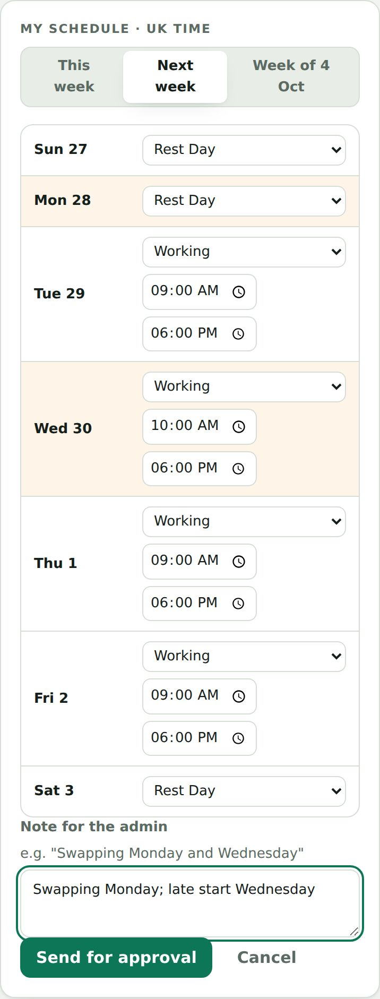
Request a change
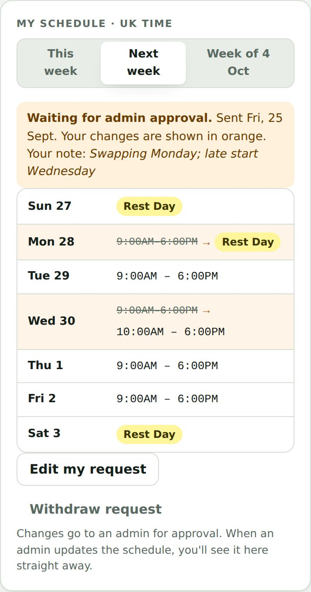
Waiting for approval
10See your payslips
Pay is every cut-off (1st–15th and 16th–end). Once payroll is finalised, your payslip is in the app. Only you can see it, with your PIN.
Tap your name and enter your PIN.
Tap My payslips (next to the WhatsApp button).
Pick a Pay period: see your basic pay, deductions and the peso amount you receive.
Tap Download PDF for a full-page copy with The Biohack Group header.
Something looks wrong?Message the Company Human Resources with the pay period and what doesn't match.
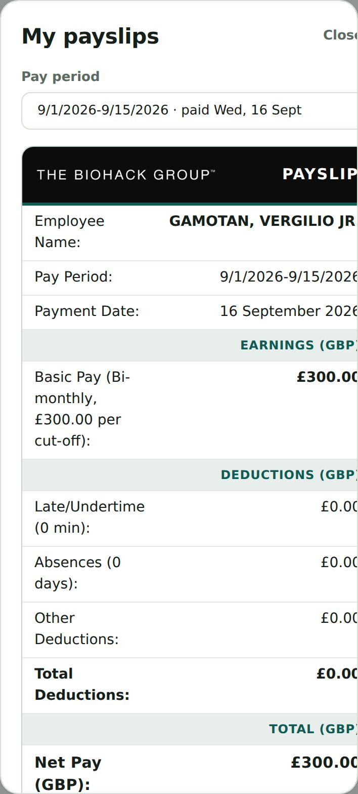
In the app
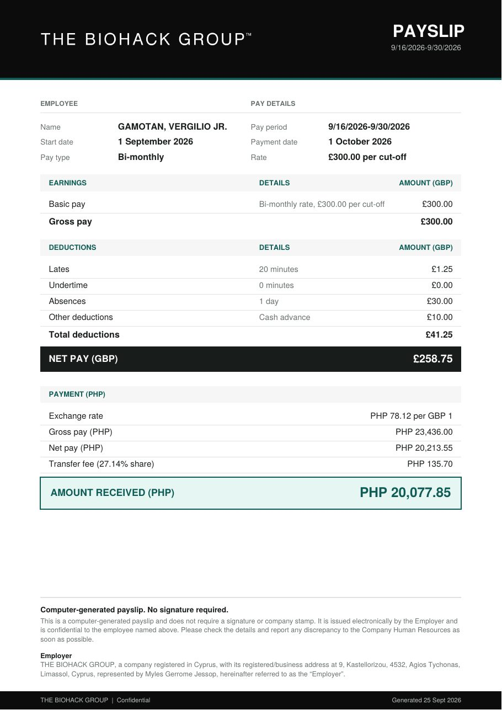
The PDF
11Make it yours: avatar, photo, colour, tagline
Tap your avatar (the small Edit tag) or Edit profile. Everyone sees your card on the home screen.
Pick an avatar or tap Upload your photo (cropped and shrunk automatically).
Choose a card colour and add a tagline (up to 40 characters).
Tap Save profile.
Good to knowKeep photos work-appropriate. Admins can remove a photo.
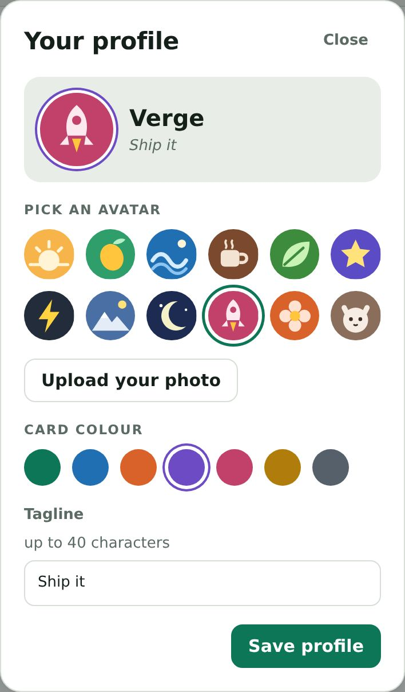
The profile editor
12Your season: XP, levels, streaks and badges
Showing up earns points. XP resets on the 1st of every month, so everyone starts fresh.
Streak: on-time days in a row. Days off don't break it.
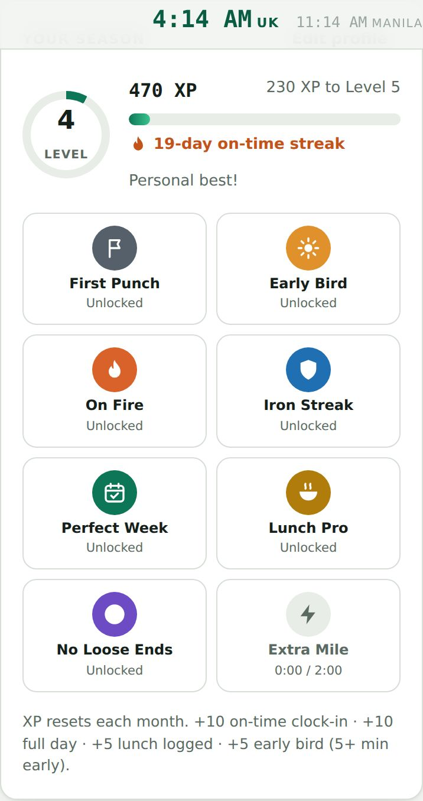
Your season card
Badges to unlock each month
1
First PunchClock in once this month
5
Early Bird5+ min early, 5 times
5
On Fire5 on-time days in a row
10
Iron Streak10 on-time days in a row
5
Perfect Week5 on-time, complete days in one week
10
Lunch ProLog lunch on 10 days
10
No Loose Ends10+ days, no missed clock-outs
2h
Extra MileEarn 2 hours of OT in a month
13Problems and answers
I forgot my PIN
Ask an admin to reset it. Next time you tap your name, make a new 4-digit PIN.
It says "Too many wrong PINs"
After 5 wrong tries your name is locked for 15 minutes. Wait, then try again, or ask an admin to reset your PIN.
I forgot to clock out, or clocked in at the wrong time
Send an admin the correct time (e.g. "Clocked out 3:05 PM UK yesterday"). You can't change past days yourself; this keeps records fair.
I can't see my name
An admin needs to add you first under Staff. Then refresh the page.
The page won't load or looks broken
Check your internet, then pull down to refresh (Ctrl+R / Cmd+R on a computer). Still stuck? Tell an admin, and post your times in WhatsApp for now.
Where did my OT go?
OT can only be used on your next work day, then it expires. Check OT to use today on the This month card. If you couldn't use it for a good reason, ask an admin: they can add it back to a day.
I didn't take lunch today
That's fine: don't tap lunch. Your full time counts. If your schedule has no lunch on that day (e.g. part-time), ask an admin to set lunch to 0 so your expected hours are right.
My shift today is wrong
Your shift comes from the weekly schedule. For today, open Different hours today? before clocking in. For future days, use Request a change in My schedule.
I can't find my payslip
Payslips show only after payroll for that cut-off is finalised. If a finalised period is missing, message an admin.
Why doesn't my phone's time matter?
The app uses its own clock, so changing your phone's time makes no difference. It keeps everyone's records fair.
Words you'll see
UK timeThe time in London. Your schedule and records use it (the "GMT" from WhatsApp).
Expected hoursYour scheduled day minus its planned lunch.
OTExtra time beyond your expected hours, in 30-minute blocks.
OT to use todayOT from your last work day. Use it today or it expires tonight.
OffsetStarting later or leaving earlier using your OT. The app adds the note for you.
ShortTime under your expected hours that OT didn't cover (undertime on the payslip).
Cut-offA pay period: 1st–15th or 16th–end of the month.
Rest dayA day you're not scheduled. It never counts as an absence.
Still stuck?Message an admin in the BHL Attendance WhatsApp group with your name, the date and what went wrong. A screenshot helps.
01Sign in, and who can do what
Admins and finance use the admin page with an email and password.
Sign in with the email and password you were given.
Got a temporary password? Change it under Access → My password.
The Staff / Admin switch at the top jumps between the staff app and this page.
Two rolesAdmin can do everything. Finance can view Today, Timesheets, Reports, Schedule and Payroll and download PDFs and CSVs, but can't change anything.
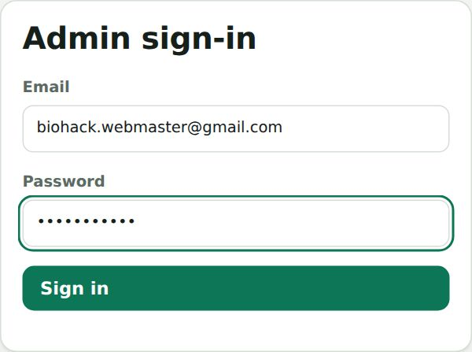
Admin sign-in
02The live Today board
Who's working, on lunch, clocked out, not in yet, off or on leave. It refreshes every minute.
Totals at the top: Working · On lunch · Clocked out · Not in · Late. People on a rest day, leave or a holiday aren't counted as Not in.
Flags: Late, OT +x, OT used (yesterday's OT covering today), Short, No clock-out and No lunch logged. Staff notes show under the flags.
Use the Day picker to look at any past date.
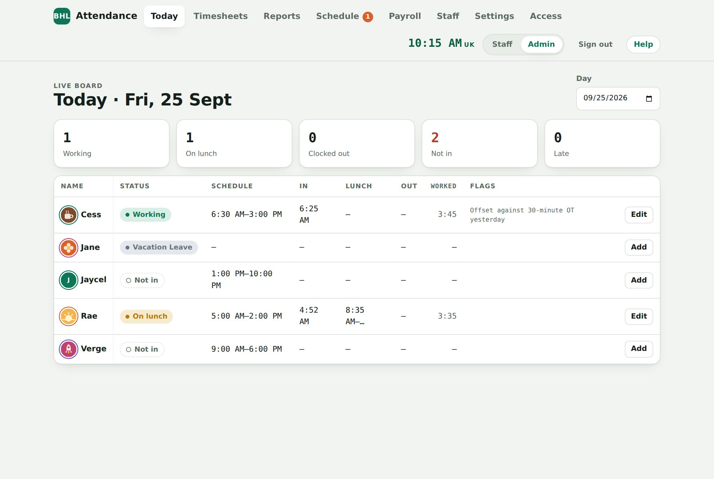
Today board
03Fix or add an entry
For a missed clock-out, a wrong time, a day someone forgot to log, or an OT exception.
On Today or in Timesheets → Daily entries, click Edit (or Add / + Add entry).
Change the times (UK) or note and click Save. Times must run in order: in → lunch out → lunch in → out.
Changing the Sched start/end here makes it that day's planned schedule (an admin decision).
Extra OT credit (minutes): lets someone use OT that already expired, e.g. 60 if they were too busy to use it.
HistoryEvery create, edit and delete is logged with who did it and when. It's shown at the bottom of the dialog.
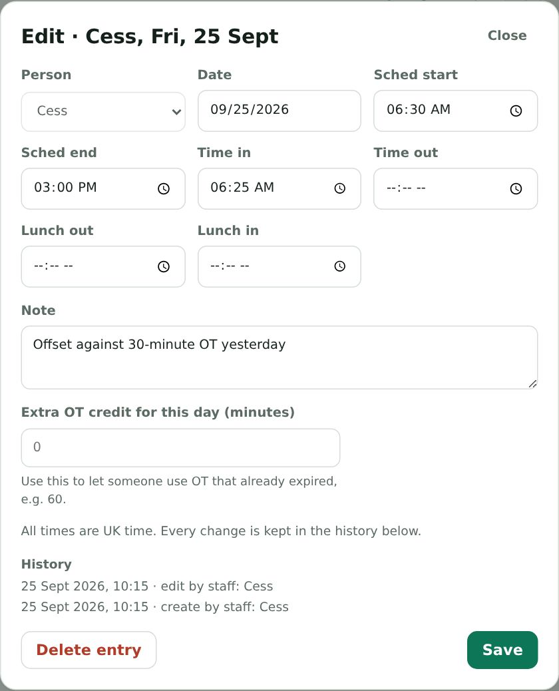
Edit an entry
04Timesheets
Hours per person for any period, ready for payroll or invoicing.
Pick This week, Last week, This month, Last month, or set From / To.
Click a person's row to filter the daily entries to them. The name column stays in place when you scroll sideways.
Download Summary CSV or Daily CSV for Excel/Sheets, or use Print / PDF.
Columns: OT earned, OT used (OT spent the next work day), Short (time under expected hours that OT didn't cover), Late, Billable hrs (regular + OT earned).
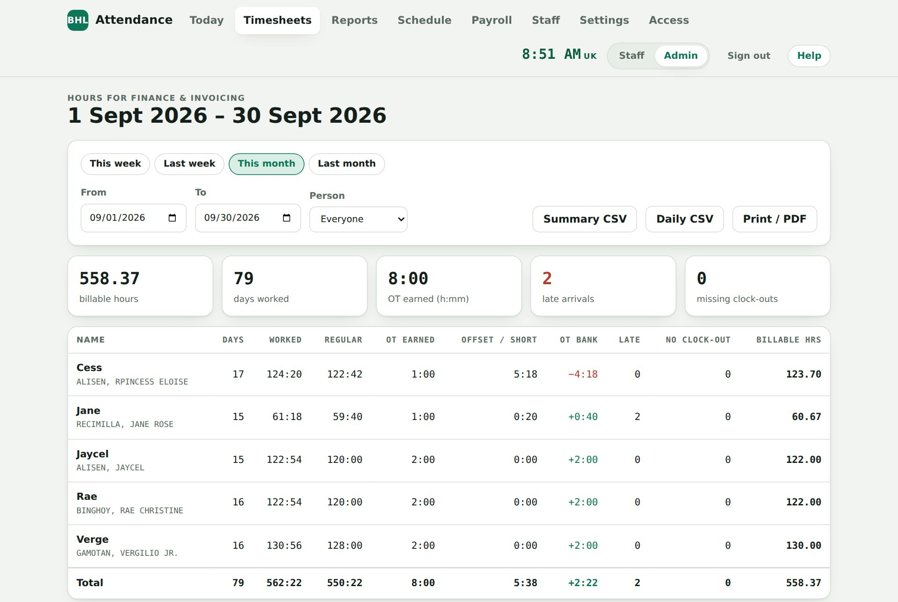
Timesheets
05Reports and PDF export
Hours per person by day, week or month, or across any dates.
Report
What you pick
Columns
Daily
One date
Totals per person plus in / lunch / out
Weekly
Any day in the week
Hours per person per day
Monthly
A month
Hours per person per week
Custom dates
From and To
By day, week or month depending on length
Choose the report and date. ← / → step through periods; Current jumps back.
Optionally pick one Person, then Export PDF (landscape A4) or CSV.
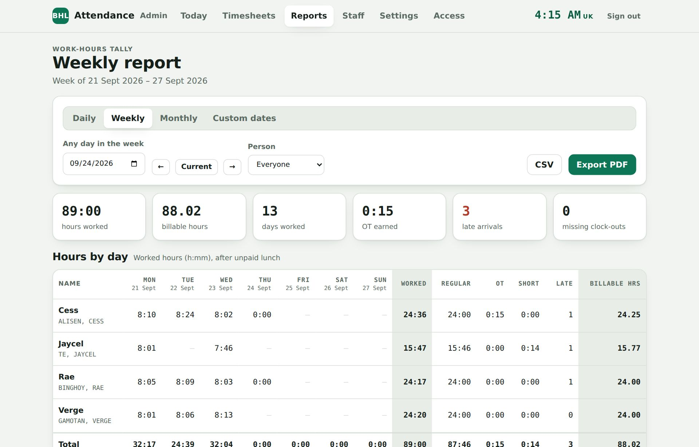
Weekly report
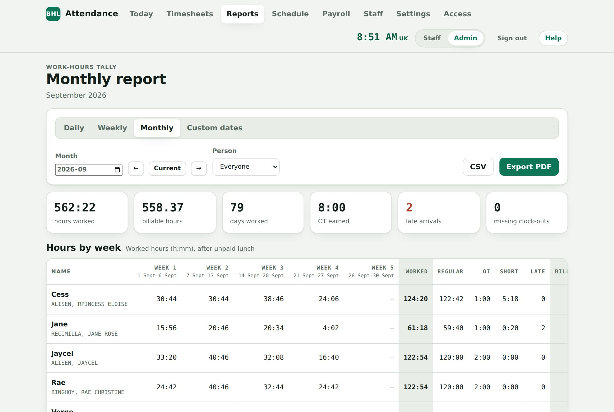
Monthly report
06Add and manage staff
Staff don't need an email, just their name and a PIN they create themselves.
Staff → + Add person. Enter the Display name and the Timesheet name (e.g. GAMOTAN, VERGE).
Set their usual Start / End (UK) and standard unpaid lunch.
Usual week: tick the working days. Each day has its own start, end and Lunch (min). Use 0 for no-lunch days (part-time, or a no-lunch day to leave early on another day).
For payroll: Start date, Pay type and rate (see Payroll).
Someone leaves: set Status to Inactive. Their history stays.
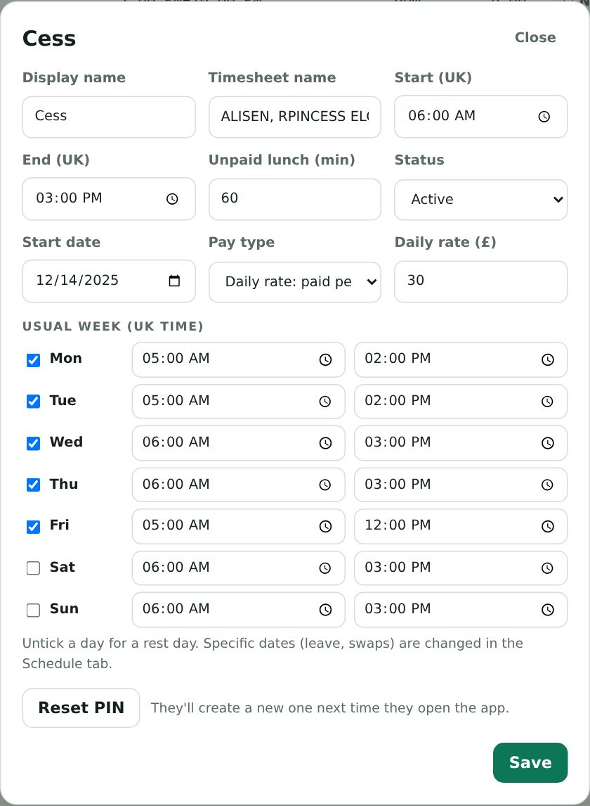
Staff → Edit
07Weekly schedule and staff requests
The usual week comes from Staff → Edit. Change single days here. Everyone sees it on the home screen.
Open Schedule. Change any cell to a different shift, Rest Day, Vacation, Sick, Emergency Leave, Holiday or Unpaid Leave. Changed days are outlined in orange.
Click Save week. Copy last week and Reset to usual week help.
Staff requests: an orange number on the Schedule tab means requests are waiting. Each shows the days, what's planned now and what they want, plus their note.
Type an optional message, then Approve (the schedule updates straight away) or Reject (they see your message).
Good to knowPublic holidays show automatically. Finance can see requests but can't approve.
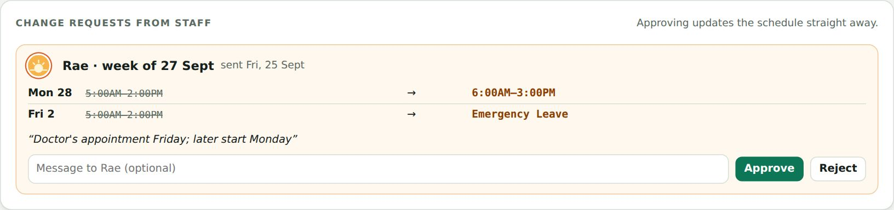
A staff request waiting for approval
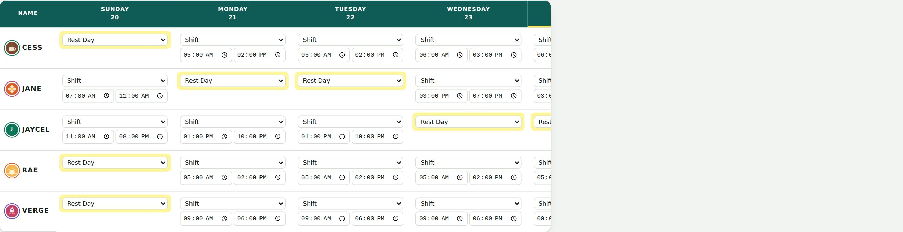
The Schedule grid
08How hours and OT work (Settings)
One set of rules for everyone. Change them under Settings.
Term
Rule
Worked
Time out − time in − the lunch they tapped. No lunch tapped = nothing taken off.
Expected
That day's planned schedule minus its planned lunch (Staff → Usual week).
OT
Worked − expected, in whole blocks (default 30 min: 45 → 0:30, 1:20 → 1:00).
OT use
Only on the next work day (the next clock-in within 4 days, so Friday → Monday). Unused OT expires. Staff choose Start later / Leave earlier at clock-in.
Short
Under expected hours after OT is used. Counts as undertime in payroll.
Late
After start + grace (5 min). With Judge by hours on, a day with full hours isn't late.
No lunch logged
A day with a planned lunch but no taps. Worth a quick check.
Billable
Regular hours (capped at expected) + OT earned.
Settings also has: Count minutes before scheduled start (on), Judge by hours (on) and Working days per cut-off (10).
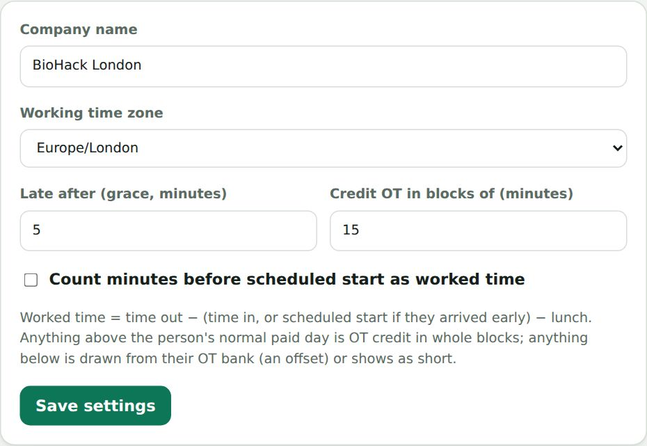
Settings
09Public holidays (Philippines)
The official 2026 and 2027 lists are already loaded under Settings → Public holidays.
A holiday on someone's working day becomes a paid day off. It shows by name on the schedule and counts in payroll. On a rest day it changes nothing.
Add new dates (e.g. Eid'l Fitr / Eid'l Adha for 2027 when announced) or Remove one.
Untick Paid for a no-work-no-pay special day.
To have someone work a holiday, change their day in the Schedule tab.
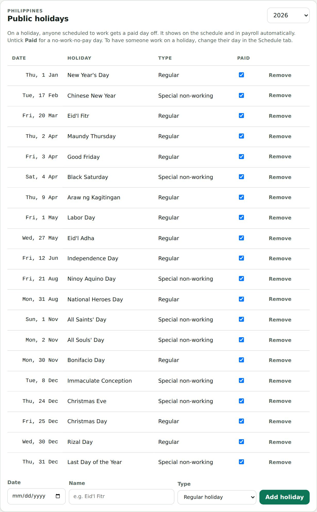
Settings → Public holidays
10Payroll and payslips
Pay is bi-monthly: 1st–15th and 16th–end. Everything is worked out from attendance, the schedule and holidays.
Once per person (Staff → Edit): Start date, Pay type and rate.
Payroll → + New period: pick the Cut-off (dates fill in), check the payment date, add the exchange rate (₱ per £1) and total transfer fee (₱).
Check the sheet. Days, hours, lates, undertime and absences fill in automatically. Type over any number to change it (it turns orange; ↺ undoes). Add Other deductions (CA, loans, taxes) with a note.
Save draft any time. When it's right, Finalise & publish (twice). Staff then see their payslips.
Pick an Employee name and Download this payslip (PDF), or All payslips PDF (one A4 page each), or CSV.
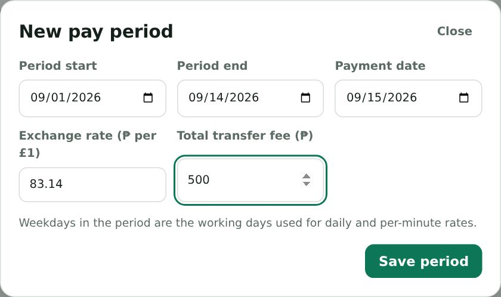
New pay period (cut-off)
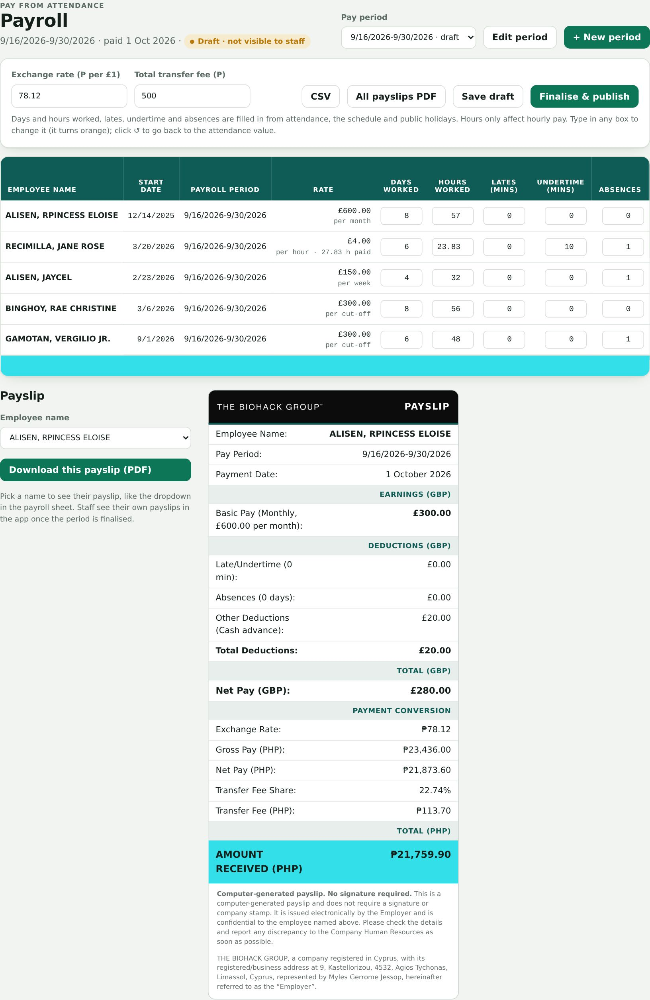
Payroll sheet (mixed pay types) and payslip
Pay types
Pay type
Pay per cut-off
Hourly
(Regular hours worked + OT used + paid leave/holiday hours) × hourly rate. Lates aren't deducted again (they're already missing from the hours).
Daily
(Days worked + paid leave/holiday days) × daily rate. Days not worked aren't paid.
The rate is the pay per cut-off. Daily rate = rate ÷ 10.
Monthly
Half the monthly rate each cut-off. £600/month → £300.
Deductions and totals
Item
Rule
Undertime
Short time not covered by the last work day's OT × per-minute rate (daily rate ÷ paid minutes per day).
Absences
Planned shifts with no clock-in (up to yesterday) and unpaid leave. Weekly / Bi-monthly / Monthly: deducted at the daily rate. Hourly / Daily: simply not paid.
Paid days off
Vacation, sick, emergency leave and public holidays.
New starter
Fixed pay types are paid per working day from their start date, up to the full cut-off.
Mixed pay types
Everyone uses their own type and rate. Totals and the fee split work on everyone together.
Pesos
Net pay × exchange rate. The transfer fee is split by each person's share of total net pay.
The payslip PDF is a full A4 page: The Biohack Group logo, employee and pay details, earnings, deductions, net pay and the amount received in pesos. The footer says it's computer-generated (no signature needed), asks staff to report discrepancies to the Company Human Resources, and names the Employer.
Good to knowOnly admins create, edit or finalise payroll. Finance can view and download. To change a finalised period, click Reopen to edit; it's hidden from staff until you finalise again.
Payslip PDF (A4)
11Create logins for admins and finance
Only admins can do this.
Access → Create a login: enter the email and pick Finance or Admin.
Click Generate, then Create login, then Copy details and send them privately.
Change a role with the dropdown, or Remove (twice) to take access away.
Safety netYou can't remove or demote yourself, so there's always at least one admin.
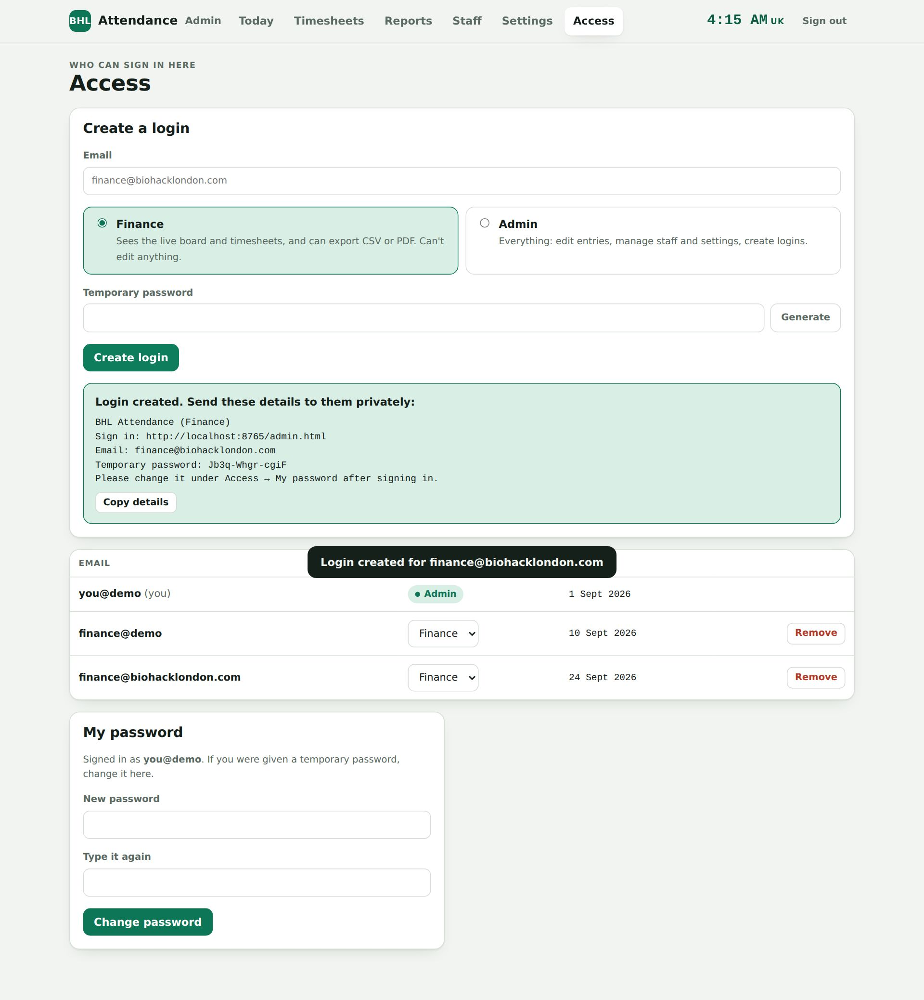
Access tab
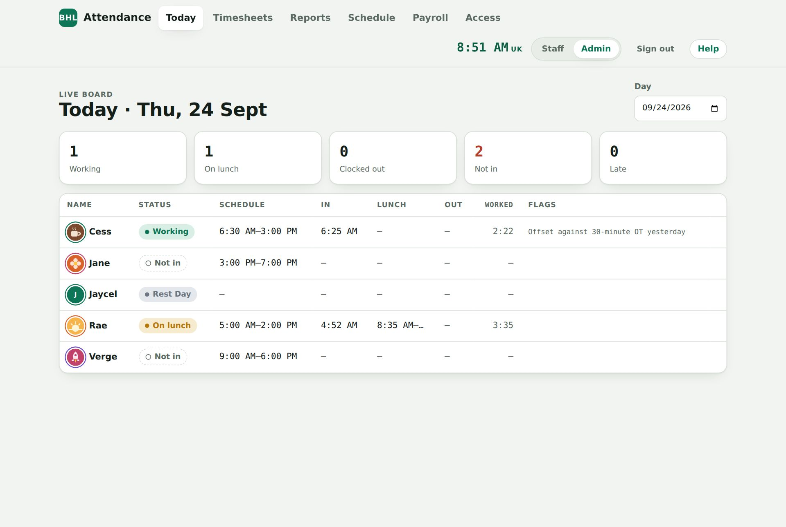
What finance sees: no Staff or Settings tabs, nothing editable
12Problems and answers
Someone forgot their PIN or is locked out
Staff → Edit → Reset PIN. They make a new PIN next time. (Locked after 5 wrong tries? They can also wait 15 minutes.)
I can't sign in
"Invalid login credentials": wrong email or password; another admin can remove and re-create your login. "This login doesn't have access": ask an admin to add you under Access.
Someone's OT expired but they couldn't use it
Open the day they want to use it (Edit) and set Extra OT credit, e.g. 60 minutes.
"No lunch logged" on a day
They had a planned lunch but didn't tap it, so the time counts as worked. If they did take a break, edit the day and add the lunch times. If that day never has lunch, set its Lunch to 0 in Staff → Usual week.
A part-timer shows Short every day
Check their Usual week: each day's times and Lunch (min) should match what they really work (e.g. 7:00–11:00 with lunch 0 = 4:00).
Payroll absences or days look wrong
Check the Schedule for those dates (a missing rest day or leave shows as an absence) and Timesheets for missing clock-ins. Then reopen the period.
A payroll number is orange
Someone typed over the automatic value. Click ↺ to go back.
A person has left the team
Staff → Edit → Status Inactive. Their past hours stay in reports.
For the webmaster (technical)How do I update the app?
GitHub (bhlwebmaster/staff_time) → Add file → Upload files, drag in the changed files, Commit changes. Never upload over config.js. If a change needs the database, run supabase/database-update.sql in Supabase → SQL Editor first (safe to re-run).
"This app isn't set up yet"
config.js on GitHub is missing the Supabase Project URL / publishable key, or was replaced by a blank copy.
"Could not find the … column … in the schema cache" or "violates check constraint"
The database is behind the site. Run all of supabase/database-update.sql in Supabase → SQL Editor.
Supabase Security Advisor warnings
supabase/security.sql (included in database-update.sql) moves privileged functions to a private schema. "Leaked Password Protection" is a paid-plan setting and can be left on the free plan.
Creating a login fails
Supabase → Edge Functions: admin-users must be deployed with "Verify JWT" off.
The app stopped loading after a quiet week
The free plan pauses after about a week with no use. Sign in to Supabase (biohack.webmaster@gmail.com) and click Restore.
Still stuck?Contact the webmaster at biohack.webmaster@gmail.com with a screenshot and a short description.
No matches. Try another word, such as PIN, lunch, report or photo.